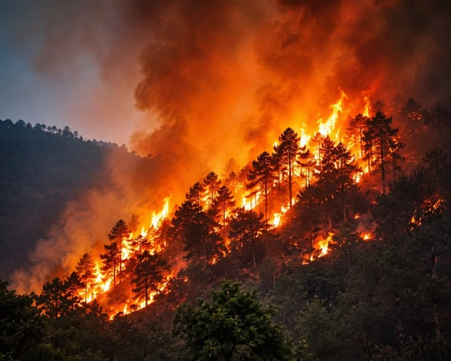

Kebakaran hutan dan lahan (karhutla) di Kalimantan kembali menyita perhatian publik. Memasuki Agustus 2026, ribuan titik panas serta kebakaran hutan dan lahan terdeteksi melalui berbagai laporan satelit dan lembaga penanggulangan bencana. Pemerintah pun telah mengerahkan sejumlah unit pemadaman darat dan udara serta mengimbau masyarakat untuk meningkatkan kewaspadaan terhadap potensi karhutla di wilayah masing-masing.
Jika melihat beberapa dekade ke belakang, karhutla hampir menjadi acara tahunan di Indonesia, khususnya di wilayah Kalimantan. Pada tahun 1982, terjadi salah satu peristiwa kebakaran hutan terbesar di Provinsi Kalimantan Timur yang menghanguskan sekitar 3,2 hingga 3,6 juta hektare. Kemudian, pada tahun 1997–1998, sekitar 2,1 hingga 9,7 juta hektare hutan dan lahan terbakar di sejumlah wilayah, termasuk Sumatra, Papua, dan Kalimantan. Salah satu faktor yang memperparah kondisi tersebut adalah fenomena El Niño, yang menyebabkan kekeringan dan penurunan curah hujan sehingga musim kemarau menjadi lebih panjang dan kering. Peristiwa serupa pun terus terjadi pada tahun-tahun berikutnya hingga saat ini. (Sumber: Detikcom)
Dari banyaknya peristiwa karhutla di Indonesia, Kalimantan menjadi salah satu wilayah yang tidak pernah absen dan selalu terdampak. Terlepas dari fenomena El Niño sebagai salah satu faktor yang meningkatkan risiko karhutla, aktivitas manusia juga tidak dapat diabaikan. Salah satunya adalah praktik pembukaan lahan dengan cara dibakar yang masih dilakukan di sejumlah tempat. Praktik tersebut kerap dianggap lebih mudah dan murah, bahkan dengan anggapan bahwa abu hasil pembakaran dapat menjadi pupuk alami dan membantu mengurangi tingkat keasaman tanah.
Pada masa pemerintahan Orde Baru yang dipimpin Presiden Soeharto, sejumlah kawasan hutan di Kalimantan dikonversi dan dimanfaatkan sebagai sumber daya alam untuk menunjang perekonomian. Hutan-hutan tersebut kemudian berkembang menjadi konsesi kayu, kertas, hingga kelapa sawit atas izin pemerintah. Kebijakan tersebut tidak terlepas dari upaya pemerintah mencari sumber pendapatan baru ketika sektor minyak bumi dan gas mulai mengalami penurunan pada awal tahun 1980-an. (Sumber: BBC)
Tidak berhenti di situ, pada tahun 1995, pemerintah juga mengembangkan sekitar satu juta hektare lahan gambut menjadi persawahan melalui Proyek Pengembangan Lahan Gambut (PLG). Proyek ini bertujuan mendorong pembangunan ekonomi wilayah, pemerataan pembangunan, sekaligus mengurangi kepadatan penduduk di Pulau Jawa melalui program transmigrasi. Namun, proyek tersebut akhirnya gagal karena pelaksanaannya dilakukan secara terburu-buru tanpa cukup memperhatikan kondisi tanah dan sistem irigasi di kawasan PLG. Dampaknya, sebagian masyarakat lokal merasa dirugikan akibat kehilangan mata pencaharian, sementara para transmigran yang datang mendapati lahan persawahan belum siap ditanami. Pada akhirnya, proyek tersebut dihentikan melalui Keputusan Presiden B.J. Habibie Nomor 80 tahun 1999 tentang Pedoman Umum Perencanaan dan Pengelolaan Kawasan Pengembangan Lahan Gambut di Kalimantan Tengah. (Sumber: BBC)
Dampak kebakaran hutan tidak berhenti ketika api berhasil dipadamkan. Kerusakan yang ditinggalkan dapat menyentuh berbagai aspek kehidupan, mulai dari lingkungan dan ekosistem hingga kesehatan masyarakat dan aktivitas ekonomi. Hilangnya vegetasi, terganggunya habitat satwa, serta pelepasan emisi karbon merupakan beberapa konsekuensi ekologis yang tidak selalu dapat dipulihkan dalam waktu singkat. Di sisi lain, asap yang dihasilkan dapat menurunkan kualitas udara dan mengganggu aktivitas masyarakat. Bahkan, dampaknya dapat meluas melewati batas wilayah ketika asap terbawa angin ke daerah lain. (Sumber: BNPB)
Pada akhirnya, kerugian akibat kebakaran hutan tidak dapat dihitung hanya dari luas lahan yang terbakar. Ada lingkungan yang rusak, masyarakat yang terdampak, aktivitas ekonomi yang terganggu, serta biaya pemulihan yang harus ditanggung setelah api padam. Karena itu, memandang karhutla hanya sebagai persoalan api rasanya terlalu sederhana. Yang sebenarnya terbakar jauh lebih besar daripada sekadar kawasan hutan.
Dalam menghadapi karhutla di Kalimantan, pemerintah melakukan berbagai upaya, mulai dari pemantauan titik panas, patroli, pemadaman darat dan udara, hingga Operasi Modifikasi Cuaca (OMC). Pada Agustus 2026, penanganan diperkuat melalui operasi terpadu yang melibatkan berbagai pihak di Kalimantan Barat, Tengah, dan Selatan. Namun, keberhasilan penanganan seharusnya tidak hanya diukur dari seberapa cepat api dipadamkan, tetapi juga dari kemampuan mencegahnya agar tidak terus berulang.
Masyarakat juga tidak seharusnya berperan sebagai penonton dalam persoalan kebakaran hutan. Memang, pencegahan dan penanganan membutuhkan peran pemerintah serta berbagai pihak yang memiliki kewenangan. Namun, masyarakat juga memiliki ruang untuk ikut menjaga lingkungan, meningkatkan kewaspadaan, dan melaporkan potensi kebakaran sejak dini. Keterlibatan masyarakat bukan berarti mengambil alih tanggung jawab pihak lain, melainkan menunjukkan bahwa menjaga hutan merupakan kepentingan bersama.
Sebab, kerusakan hutan tidak sesederhana kehilangan sejumlah pohon. Di balik pohon yang terbakar terdapat habitat satwa, keanekaragaman hayati, keseimbangan ekosistem, dan fungsi lingkungan yang ikut terdampak. Dampak karhutla juga dapat menyentuh berbagai aspek, mulai dari degradasi ekosistem dan hilangnya keanekaragaman hayati hingga persoalan kesehatan dan ekonomi. (Sumber: BNPB)
Apa yang terlihat sebagai lahan terbakar dalam hitungan hari dapat meninggalkan kerusakan yang membutuhkan waktu jauh lebih panjang untuk dipulihkan.
Namun, pertanyaan yang mungkin lebih penting adalah : mengapa persoalan ini terus berulang? Setiap musim kemarau, kita kembali berbicara tentang titik panas, asap, pemadaman, dan kerusakan lingkungan. Berbagai upaya penanganan memang terus dilakukan, bahkan pada 2026 pemerintah kembali memperkuat operasi darat, udara, serta deteksi dan pencegahan karhutla di sejumlah wilayah Kalimantan. Namun, jika kebakaran terus kembali terjadi, keberhasilan tidak seharusnya hanya diukur dari seberapa cepat api dapat dipadamkan, melainkan juga dari seberapa mampu kita mencegahnya muncul kembali.
Pada akhirnya, kebakaran hutan di Kalimantan bukan hanya persoalan tentang api. Ini adalah persoalan tentang bagaimana manusia memperlakukan alam, bagaimana pemerintah menjalankan pengawasan, bagaimana masyarakat mengambil peran, dan seberapa serius kita belajar dari kejadian yang telah berulang. Karena mungkin, persoalan terbesar bukan karena kita tidak tahu bahwa hutan harus dijaga, tetapi karena kita masih terlalu sering menyadarinya setelah hutan mulai terbakar.
← Kembali© 2025 IKADU MESIR. All Rights Reserved.